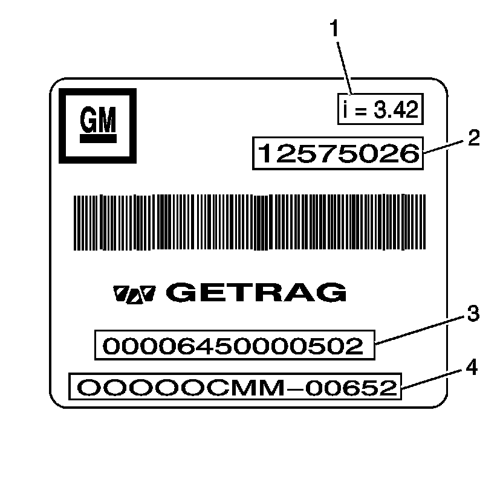
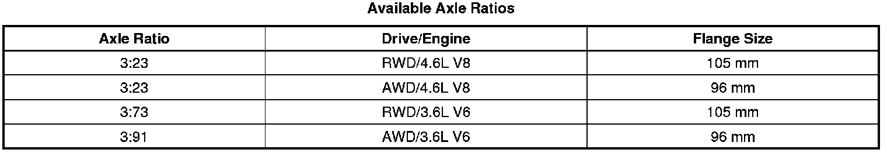

Operation CHARM
: Car repair manuals for everyone.
Home
>>
Cadillac
>>
2008
>>
SRX AWD V8-4.6L
>>
Repair and Diagnosis
>>
Transmission and Drivetrain
>>
Differential Assembly
>>
Specifications
>>
Mechanical Specifications
>>
Rear Drive Axle
>>
Rear Axle Usage
Rear Axle Usage
Rear Axle Usage
Rear Axle Usage:

1
- Ratio
2
- GM Part Number
3
- Getrag Part Number
4
- Serial Number
